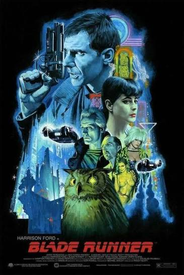
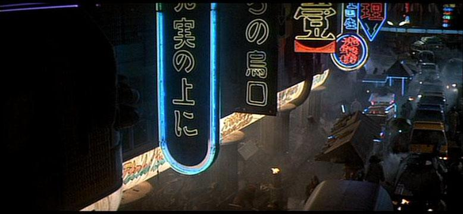
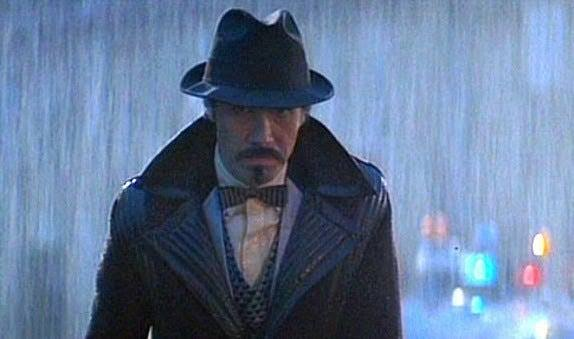
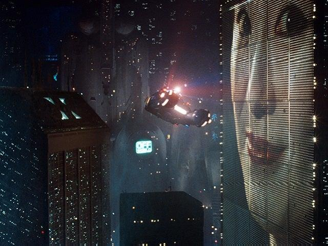
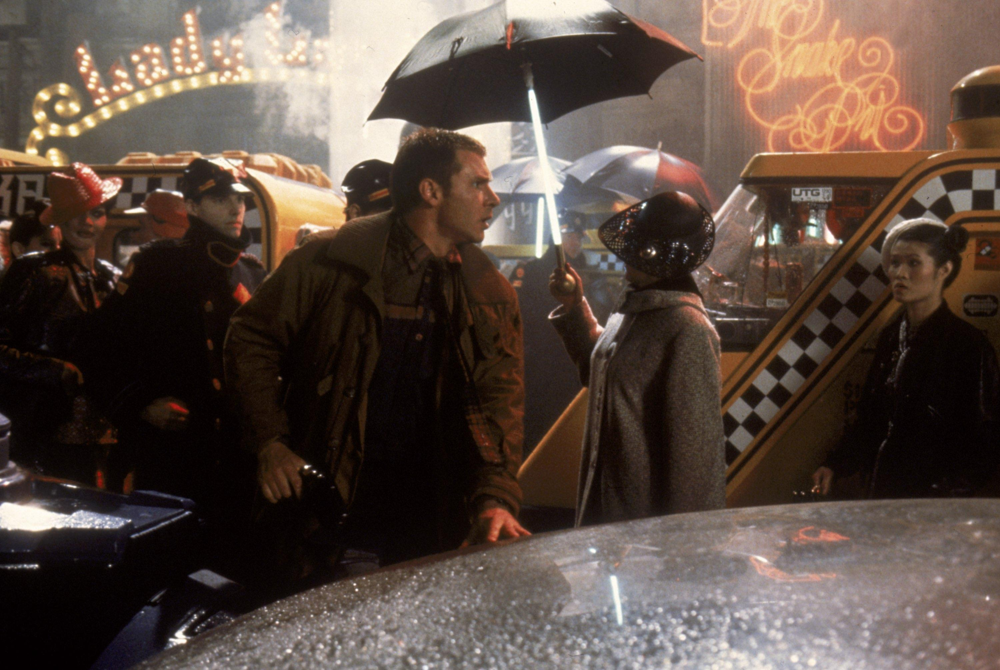
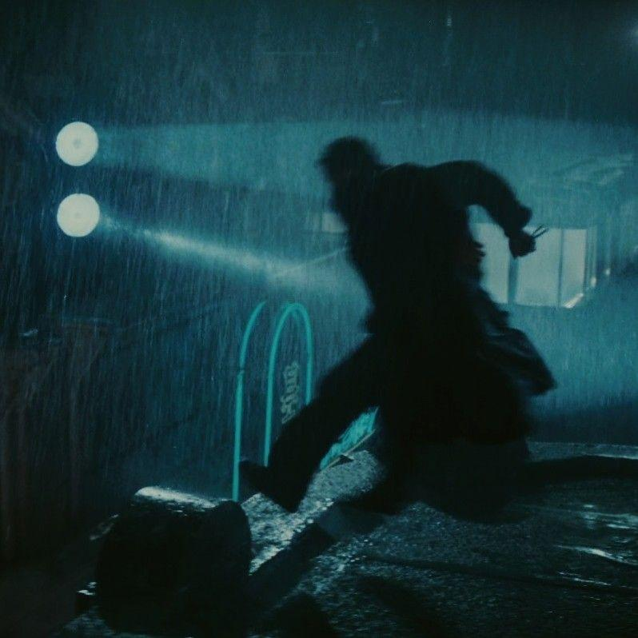
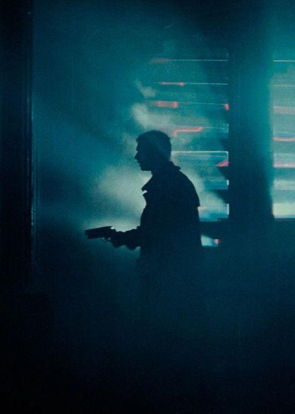

.jpg)
Blade Runner(1982)
- IMDb: 8.1/10 ⭐
- Rotten Tomatoes: 89% 🍅
- Letterboxd: 4.1/5

Overview
Blade Runner is a groundbreaking science fiction film directed by Ridley Scott and released in 1982. Set in a dark, futuristic Los Angeles of 2019, the story follows former police officer Rick Deckard, who is assigned to hunt down rogue bioengineered humans known as replicants. The film explores deep themes such as artificial intelligence, memory, identity, humanity, and the moral boundaries of technology. Known for its atmospheric visuals, neon-lit cityscapes, and haunting soundtrack by Vangelis , Blade Runner has become one of the most influential films in cinema history and a defining work of the cyberpunk genre.
Quick Facts
- Director: Ridley Scott
- Release Year: 1982
- Genre: Sci_fi ,cyberpunk,Neo_noir, Thriller
- Running Time: 117 minutes
- Music: Vangelis
- Language: English

Main Cast
- Harrison Ford Role: Rick Deckard
- Rutger Hauer Role: Roy Batty
- Sean Young Role: Rachael
- Edward James Olmos Role: Gaff

Summary
In a dystopian Los Angeles of 2019, former police officer Rick Deckard is forced to hunt down a group of escaped replicants, bioengineered beings that look and act like humans. As he tracks them through the dark, rain-soaked city, Deckard begins to question the nature of humanity, memory, and what truly separates humans from machines.
Visual Style




Blade Runner is famous for its cyberpunk aesthetic: neon lights, constant rain, giant advertisements, crowded streets, and dark industrial architecture. The film's cinematography helped define the look of futuristic cities in movies, games, and anime for decades.
Soundtrack
The electronic soundtrack by Vangelis is considered legendary. Its combination of synthesizers, ambient textures, and emotional melodies gives the film a dreamlike and melancholic atmosphere.
Famous Quote
“All those moments will be lost in time, like tears in rain.”
_ Roy Batty
Watch Online
AppleTVPrime Video
justwatch
Final Thoughts
More than four decades after its release, Blade Runner remains a masterpiece of science fiction cinema. Its stunning visuals, haunting soundtrack, and deep exploration of humanity and artificial intelligence make it a film that continues to captivate new generations of viewers.
Thanks for visiting Movie Introduce page.
More To Come